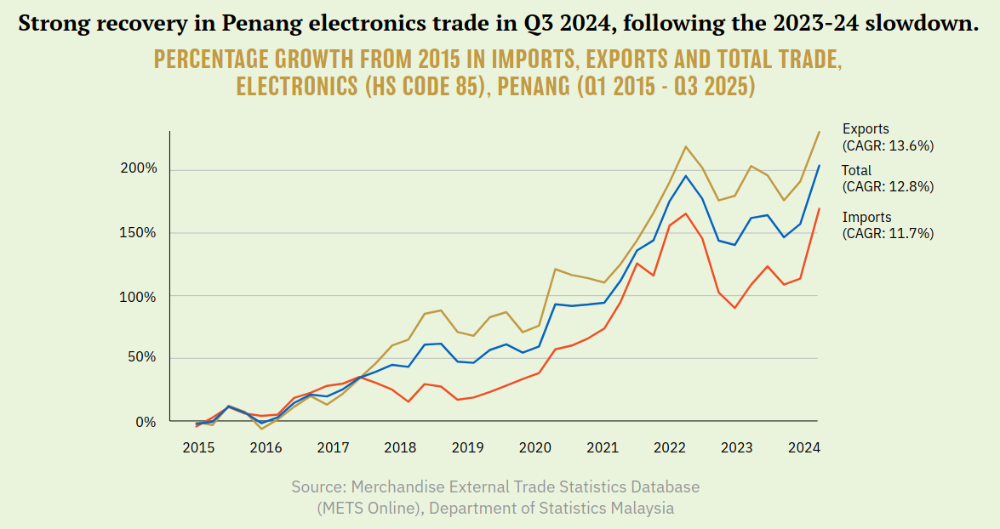
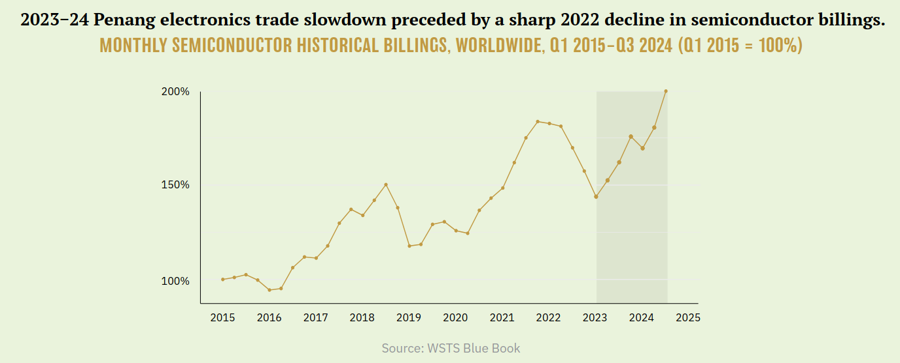
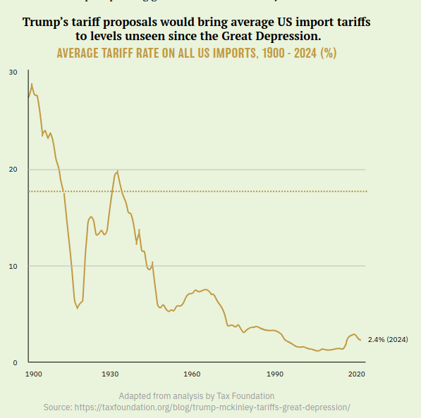

First published in Penang Monthly (January 2025).
THE WORLD SEMICONDUCTOR TRADE STATISTICS (WSTS) forecasts 16% year-on-year growth for the global semiconductor market in 2024, with the Asia Pacific region growing by 17.5%.1 This robust market expansion is led by the demand for advanced processing to power artificial intelligence applications across data centres and consumer devices.2
1 https://www.wsts.org/76/103/WSTS- Semiconductor-Market- Forecast-Spring-2024
2 https://www.bloomberg.com/ professional/insights/markets/global- semiconductor-midyear-outlook/
3 https://www.thestar.com.my/ business/business-news/2024/09/09/ ee-firms-confident-about- 2h24-performance
Malaysian electronics and electrical (E&E) firms are projecting continued confidence in their performance for the second half of 2024.3 Penang, in particular, has emerged as a key player in this global semiconductor boom. The state’s strategic location, skilled workforce and favourable investment climate have attracted numerous multinational corporations to set up their operations here.
Although Penang plays a vital role in the global electronics supply chain, a significant portion of the value creation happens elsewhere. Penang specialises in the assembly and testing of semiconductor chips, commonly known as outsourcing semiconductor assembly and test (OSAT) services. While these have been perceived as a lower-value segment, they provide a strong foundation for future growth in the semiconductor industry, especially with the demand for advanced packaging solutions increasing.
The trend towards diversification and the increasing importance of backend processes create opportunities for locations with established ecosystems, such as Penang. Arizona’s success in attracting TSMC’s investment—due to an existing semiconductor ecosystem primarily built by Intel—shows the advantages of leveraging established infrastructure and a skilled workforce.4 Penang can similarly capitalise on its OSAT strengths to attract investment in related activities, potentially becoming a hub for advanced packaging and testing solutions.
4 Nikkei Asia, 2024.
Penang’s E&E trade performance

While E&E exports growth has been muted for Malaysia this year, growth in Penang’s E&E exports remains robust. Nationally, between January and September 2024, E&E imports surged 16.9% year-on-year, while export value dropped slightly by -1.5%.5 In contrast, September’s year-to-date value of Penang’s electronics exports grew by 4.6% year-on-year, while imports grew by 15.5% over the same period, resulting in total trade rising by 8.4%.
5 E&E references Harmonised System (HS) code 85 for comparability with Penang-level data, which is only available at the two-digit level for the HS. MATRADE states 28.6% and 0.6% for imports and exports respectively in its September 2024 report, but it is unclear which commodity codes are used. Restricting the analysis to HS codes 8541 and 8542, we get 17.6% and -4.4% for imports and exports respectively. (https://www.wcoomd. org/-/media/wco/public/ global/pdf/events/2019/ hs-conference/ semiconductors-and-the-future-of-the-hs_sia- white-paper_april-2019. pdf?la=fr)
A broader look at trade data shows a rally in Penang’s electronics sector in the lead up to 2022, when it recorded a whopping 21.8% year-on-year GDP growth. Consequently, growth in Penang’s electronics trade between 2015 and 2024 has well surpassed 10% per annum. Following a slump between 2023 and mid-2024, during which gross output (GDP) declined by 0.8% (2023), the sector has rebounded in Q3 of 2024.
Global trends, local impacts
Penang—and Malaysia by extension—have been large beneficiaries of the global electronics reshoring race. RM53.3bil in foreign-source E&E investments were approved in 2023 within Penang, second only to 2021’s record.
When looking at trade performance, it is important not to overly attribute short-term movements in the local E&E sector to local conditions. For instance, the 2023-24 slowdown in Penang’s electronics trade clearly reflects global trends in semiconductor billings.

Keep in mind that the sector is characterised by boom-and-bust cycles caused by rapid technological changes and unpredictable demand—companies tend to overinvest in manufacturing capacity during booms, and this is often followed by market corrections.
Moving up the value chain
Launched in December 2024, the Penang Silicon Design 5km+ initiative aims to spur semiconductor innovation and industrial upgrading by co-locating semiconductor companies, targeted subsidies and talent programmes.
While Penang has actively sought to attract investment and leverage its existing strengths, industrial upgrading, particularly towards higher-value activities like chip design and fabrication, significant hurdles are still present. The technological complexity and capital intensity required for leading-edge fabrication pose substantial challenges for newcomers.
Intel, a long-time leader in semiconductor manufacturing, encountered substantial difficulties in transitioning to advanced nodes, illustrating the technological barriers even for established players.6 Fortunately, even if Penang does not rise to the pinnacle of the value chain, industry and geopolitical circumstances continue to offer a strong foundation for Penang’s job market—no doubt a contributor to Penang’s enviably low unemployment rate.
6 Nikkei Asia, 2024.
One way for Penang companies to upgrade their operations is through the championing of their local site leaders—however, it takes visionary leadership and long-term planning to build local capacity and convince top management that local sites are ready to move up the value chain. Further understanding of the internal decision-making processes of multinational companies (MNCs) could shed some light into developing strategies to encourage them to upgrade their operations in Penang.
Even so, strong corporate leadership may not be sufficient. Typically, policies that induce “vulnerability shocks” which challenge firms’ status quos are the main driver of industrial upgrades in the developing world.7 Recognising and preparing for similar future disruptions can be crucial in facilitating industrial upgrades in Penang.
7 https://www.sciencedirect.com/ science/article/abs/pii/ S0305750X17301729
8 The Penang Talent Prospects Survey (https://penanginstitute.org/wp- content/uploads/2023/07/Penang_Talent_Prospects_2023.pdf) finds that industry participants expect demand for engineering and technician talent to shift from technician-majority to engineer-majority from 2023 to 2026, although talent demand for each is projected to more than double.
That being said, moving up the electronics value chain is not a silver bullet for economic development—a move to higher-value activities does not automatically lift all boats. As the industry in Penang becomes more technologically sophisticated, workforce demand may shift from technician- to engineer-dominant,8 potentially widening the wage gap between skilled and unskilled workers, or even resulting in job losses for those whose skills are no longer in demand.
Policies that support worker training and reskilling can help mitigate job displacement and facilitate the transition to higher-value activities. Additionally, policies that promote fair labour practices and collective bargaining can ensure a more equitable distribution of the benefits.
Trump 2.0: a stormy outlook
A wave of decoupling from the Chinese supply chain among Western allies in the electronics industry, accelerated by the US CHIPS (“Creating Helpful Incentives to Produce Semiconductors”) and Science Act of 2022, is on track to create an even more geographically distributed supply chain. Experts have opined that the rise in US chip manufacturing will lead to greater demand for OSAT services abroad. Additionally, Penang has attracted chipmakers seeking to diversify their manufacturing footprint in what has been named the China Plus One strategy.9
9 https://www.channelnewsasia.com/asia/malaysia-china-companies-move-manufacturing-facilities-semiconductors-trade-war-4282471
The return of the Trump administration in 2025 creates substantial uncertainty for the global E&E industry. Of concern is the previous Trump administration’s aggressive posture towards the Chinese. Even though the US has a long-standing commitment to Taiwan’s security, the incoming administration’s capitulation towards authoritarians bodes poorly for Taiwan, an indispensable component of the global supply chain for leading-edge chips.
The only certainty will be a further breakdown in US policy coherence. It is baffling how the CHIPS Act’s aggressive measures to reshore chips manufacturing and stifle Chinese innovation is the encapsulation of Trump’s “America First” rhetoric. Yet, in October, Trump referred to the CHIPS Act as a “bad deal”,10 raising uncertainties about the future of the Act.11 Trump’s protectionist rhetoric must be considered together with the contrarianism that defines the Make America Great Again (MAGA) movement.
10 https://www.cnbc.com/2024/11/07/trump-likely-to-uphold-chips-act-despite-his-campaign-rhetoric-experts-say.html
11 Experts have opined that a repeal of CHIPS is unlikely. House Speaker Mike Johnson echoed Trump’s position on CHIPS, then walked back on his comments, expressing a desire to “streamline” the Act instead of repealing it. (https://apnews.com/article/mike-johnson-chips-act-d5504f76d3aa0d5b401216f3592c9a09)
12 There is also the question of tariffs’ impact on consumer tech products in the US, which were previously exempt from Chinese import tariffs. Reporting suggests the tech industry expects to be caught in a trade war. (https://arstechnica.com/tech-policy/2024/11/tech- industry-fears-china-will- retaliate-against-trumps- 60-tariffs/)
13 Tax Foundation, 2024.
More alarmingly, on the campaign trail, Trump floated the idea of raising import tariffs to unprecedented levels, in particular with China: 60% for Chinese goods, 10-20% for goods from the rest of the world.12 This proposal would bring back US import tariff rates unseen since the Great Depression. In 1930, the US passed the Smoot-Hawley Tariff Act which raised tariffs to their highest levels since the early 19th century, and is believed to have contributed to the severity of the Great Depression by reducing international trade.13

If Trump were to implement tariffs at the levels he has proposed, they would be comparable to Smoot-Hawley in magnitude—though the impact of Trump’s proposal for universal tariffs would be far more wide-ranging, affecting 10 times the value of trade impacted by the 2018 trade war. Experts expect these tariffs to raise inflation and unemployment alongside substantial uncertainties for US importers,14 increasing the risk of a US recession. Given the magnitude of the tariffs, China and other countries would likely be compelled to impose retaliatory tariffs against the US, reducing gains from trade across the world. Moreover, the accompanying appreciation in the dollar risks precipitating global financial instability.15
14 https://www.hamiltonproject.org/publication/post/ tariffs-on-all-imports-would-create-chaos-for-business/
15 https://www.intereconomics.eu/ contents/year/2024/ number/4/article/trump-s-2025-tariff-threats.html
16 Ratan, 2024.
17 For semiconductors specifically, even without Trump’s tariffs, 2025 is already set for a substantial widening of Malaysia’s tariff gap vis-a-vis China. Currently, China semiconductor imports are subject to 25% Section 301 tariffs, but with the four-year review of Section 301 recently finalised in September 2024, US tariffs for China semiconductor imports are set to rise to 50% in 2025, notwithstanding 10-year restrictions on expansion in China and other “countries of concern” imposed on the recipients of the CHIPS Act funding. (https://ustr.gov/sites/default/files/89%20FR%2076581%20(September%2018%2C%202024).pdf;https://www.thestar.com.my/business/business-news/2024/05/16/united-states-tariff-hike-will-benefit-malaysia;https://www.csis.org/blogs/perspectives-innovation/guardrails-chips-act-funding-restrict-investments-china-may-restrict)
18 A Consumer Technology Association report attributes the 2021 surge in Malaysia’s semiconductor production to supply issues rather than US tariffs, since the 25% Section 301 US semiconductor tariffs were imposed already in August 2018. (https://www.wita.org/wp-content/uploads/2022/08/CTA_Section-301-Tariff-Whitepaper.pdf)
19 https://www.nber.org/digest/202204/how-us-china-trade-war-affected-rest-world
Penang has welcomed firms seeking to exploit tariff gaps— for instance the relocation of Chinese solar manufacturers to circumvent trade barriers.16 Therefore, there is some chance that Trump 2.0 may work in Penang’s favour.17 In fact, the ignition of the US-China trade war during the first Trump administration saw trade increase for “bystander” countries18, particularly those with a high degree of economic integration.19 Nevertheless, with Trump’s proposal affecting the rest of the world this time, there will be no bystanders.
While protectionist measures like those implemented by the US could incentivise the return of some manufacturing to the US, Malaysia’s semiconductor industry has shown resilience in the face of such policies. However, beyond the anticipated tariff-induced slump in the US domestic demand, if US chips policy deepens across the supply chain beyond fabrication20—or, worse yet—if the CHIPS Act is repealed, demand for Penang’s OSAT services could decline, potentially leading to local job losses in the industry.
20 While the focus of the CHIPS Act is on semiconductor manufacturing, CHIPS incentives also include packaging activities with an apparent focus on advanced packaging. It also includes funding that will be deployed to expand international packaging capacity through the ITSI (International Technology Security and Innovation) fund. See https://sgp.fas.org/crs/misc/R47523.pdf for details.
Talent: the way forward?
Addressing talent demand is crucial for Penang’s semiconductor industry success. As a matter of fact, the global semiconductor industry faces an acute shortage of skilled workers, from technicians to specialised engineers. While initiatives like Penang’s STEM Talent Blueprint and Malaysia’s National Semiconductor Strategy address this challenge, competition for talent remains fierce. Continuous training and upskilling programmes are crucial to ensure that the local workforce meets the industry’s evolving demands. Collaborations with educational institutions—like Intel’s partnership with Arizona colleges21—can help create a pipeline of skilled workers.
21 https://www.youtube.com/watch?v=lTcbUcRdaYg&t=690s
While federal and state authorities have accurately identified human capital as the growth lever for the semiconductor industry, caution must be exercised to ensure it is done holistically. Amidst the E&E gold rush, policymakers must not lose sight of the broad spectrum of the sciences. A holistic STEM development strategy in Penang must go beyond electronics engineering. The STEAM movement—incorporating artistic skills into science education—is a reminder not to decouple creativity from the sciences, as problem-solving skills are key enablers for higher-value operations.
It is natural for policymakers to pursue STEM development to accommodate the needs of the E&E industry, but the responsibility goes both ways. The success of China’s “forced” technology transfer regime in jumpstarting its now-dominant electric vehicle industry calls into question the conventional wisdom of a straightforward role for investment liberalisation in spurring economic development.22 Although the practice is controversial, it may be worthwhile to explore mechanisms to encourage capital investments from talent-intensive sectors to contribute to the community’s talent development.
22 An assessment of Chinese solar panel manufacturers’ relocation to Malaysia (primarily Penang), induced by trade barriers, casts doubt on the idea of broad benefits from FDI beyond local employment (https://gsipe-workshop.github.io/files/Malaysia_Paper.pdf)
Risks and opportunities
Penang’s E&E industry is at a crossroads. On the one hand, the industry is poised for continued growth, driven by global semiconductor demand and Penang’s key role in the global supply chain. Penang has successfully attracted significant foreign investment in the E&E sector, particularly in 2021 and 2023. On the other hand, the industry faces uncertainties arising from its inordinate exposure to global trends and geopolitical tensions, such as the US-China “chip war” and the return of the Trump administration.
Penang’s semiconductor future hinges on recognising the complexities of corporate decision-making and the potential pitfalls of focusing solely on moving up the value chain. While chip design and research and development (R&D) are attractive opportunities for industrial upgrading, to encourage higher-value operations, a keen understanding of the internal processes within MNCs goes hand-in-hand. Additionally, simply shifting towards higher-value activities may not guarantee widespread economic benefits and could even exacerbate social inequalities. Therefore, a nuanced approach is needed—one that considers the interplay of global trends, internal corporate dynamics and social equity—alongside strategies for talent development and technological advancement.